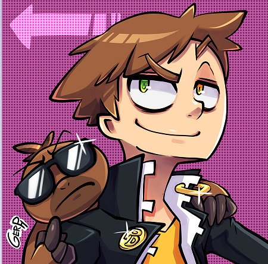
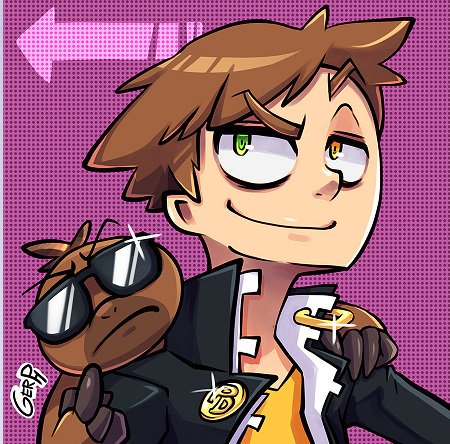

 
Doomentio(Perezoso doom)
Manuel Arturo Coronado Preciado (Sonora, México),
también conocido como Doomentio o Perezoso Doom
es un canal de Youtube que se dedica a hacer reseñas
y críticas sobre animación
en general.
|

Quetzal (Ovejas electricas)
Ovejas Eléctricas es un canal de youtube
dedicado a los videojuegos y la cultura
|
Potemkill
Potemkill es un youtuber español dedicado
al sector de los videojuegos. Su contenido
gira en torno a críticas, tops, simples
recomendaciones o información sobre el medio
en la actualidad.
Ha estudiado Marketing y en diferentes vídeos
se le puede ver aplicando sus conocimientos.
|
Woshingo
"Vivo a base de oxígeno. Hago videos."
|
La zona cero
La Zona Cero es un canal que se centra,
principalmente, en la animación occidental,
siendo líder en Latinoamérica, y en temas
referentes a esta misma. Con críticas, tops,
vídeos de opinión, y demás.
|
El Reviewer Random
El Reviewer Random es un personaje ficticio de
youtube creado por Valentín Fuentealba, cuya
temática subida a Youtube es específicamente
críticas, opiniones, sátiras de dibujos animados,
películas y sucesos sociales de relevancia en Chile.
Desde el 2012 hasta principios del 2014,
sus vídeos fueron apoyados por Poptágono.
|